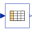

ForceCurrentBehaviourComparison of the force-current characteristics of both converter models with armature blocked at mid-position |
|
Diagram
{kind=link}
Information
This information is part of the Modelica Standard Library maintained by the Modelica Association.
Have a look at ConstantActuator and at PermeanceActuator for an explanation of both converter models.
Simulation of the force-current characteristics of both converter models with the armature blocked at mid-position x=0 reveals the difference between the two models. In the ConstantActuator, force is proportional to current. In the simple PermeanceActuator there is an additional non-linear force component that is due to the dependency of the inductance on the armature position. Comparison with FEA results validates the higher accuracy of the PermeanceActuator. In the FEA model, the relative permeability of the stator iron was set to mu_rFe=const.=1000 in order to avoid additional non-linear force components due to saturation. Simulate for 6 s and plot vs. current (e.g., iSensor.i)
pmFixedPos.flange_b.f // force of permeance model
cFixedPos.flange_b.f // force of converter constant model
comparisonWithFEA.y[1] // force of FEA model for comparison
Components (10)
| pmGround |
Type: Ground |
|
|---|---|---|
| pmActuator |
Type: PermeanceActuator Description: Moving coil actuator described with permeance model |
|
| pmFixedPos |
Type: Fixed Description: Fixed armature position |
|
| pmRampCurrent |
Type: RampCurrent Description: Ideal current source |
|
| cGround |
Type: Ground |
|
| cFixedPos |
Type: Fixed Description: Fixed armature position |
|
| cRampCurrent |
Type: RampCurrent Description: Ideal current source |
|
| cActuator |
Type: ConstantActuator Description: Moving coil actuator described with converter constant |
|
|  | comparisonWithFEA |
Type: CombiTable1Ds Description: Column 1: current, col. 2: force; mu_rFe=const.=1000 in FEA model |
| iSensor |
Type: CurrentSensor Description: Input value for look-up table with FEA results |